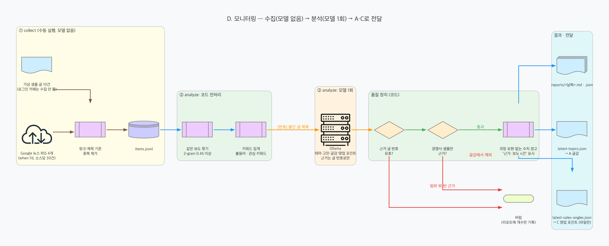

마케팅 봇 구축 방안 — 회사 공용 엔진, 첫 적용 쿠핀 PLUS·ON
- 질문 1. 모델은 언제, 어떤 조건으로 호출되나 — 누구에게, 언제 보낼지는 규칙과 데이터가 정합니다. 수신 동의·발송 한도·데이터 조건을 모두 통과했을 때만 모델을 부르고, 모델은 문구 작성만 맡습니다. 시작 신호는 실시간(웹훅)·예약(점검)·수동 세 가지입니다.
- 질문 2. 어떻게 활용하나 — 회사가 운영하는 모든 서비스가 함께 쓰는 공용 엔진 1개 + 서비스별 연결부 구조로 만듭니다. 마케팅 시나리오는 서비스 유형(B2B 영업형·셀프 가입 SaaS·B2C)별 템플릿으로 재사용하고, 첫 적용 대상으로 쿠핀 PLUS 7개·ON 4개를 정의했습니다. 먼저 3개를 병렬로 실험합니다.
- 질문 3. 대상 서비스 분석 — 첫 적용 대상으로 쿠핀 PLUS·ON을 깊이 분석했습니다. 쿠핀 PLUS는 소상공인 613.4만 개 사업체 시장에 있지만, 쿠폰·적립 기본 기능은 네이버·토스·페이히어가 무료로 줍니다. PLUS의 차별점(POS 불필요, 외부 판매 채널, AI 리포트)을 실제로 쓰게 만드는 쪽에 봇을 붙입니다.
질문 1. 모델은 언제, 어떤 조건으로 호출되나
엔진은 7단계로 동작하고, 모델은 그중 ③ 문구 생성에서만 쓰입니다. 나머지 단계는 일반 코드라 결과가 매번 같고 테스트로 검증할 수 있습니다.

빨간 선 = 조건 실패로 종료, 주황 선 = 모델 호출, 보라 선 = 사람 승인
| 항목 | 규칙 |
|---|---|
| 시작 신호 | 실시간(웹훅: 가입·결제·신규 상품·문의), 예약(매시간·매일·매월 점검), 수동(운영자 실행·사장님 버튼) |
| 호출 전 조건 | 이 이벤트를 쓰는 시나리오가 있는지 → 광고 수신 동의 → 같은 사람 발송 한도·허용 시간 → 필요한 데이터 최소량 → 저장된 문구 재사용 가능 여부. 하나라도 걸리면 호출하지 않음 |
| AI 모델 | 미정. 프로토타입은 개발용으로 로컬 gpt-oss:20b를 썼을 뿐입니다. 운영에 쓸 모델(로컬·상용, 종류)은 문구 품질·응답 속도·비용·데이터 보안을 비교해 정합니다. 엔진은 모델을 설정만으로 바꿀 수 있게 만듭니다 |
| 출력·검증 | JSON 형식 강제 → 빈칸·한자 섞임·입력에 없는 숫자·금지어 검사 → 실패 시 1회 재생성 → 그래도 실패하면 사람 검토 또는 고정 문구 |
| 기록 | 호출마다 프롬프트 버전·모델·소요 시간·검증 결과를 남겨 문제 원인을 추적 |
현재 프로토타입의 호출 시점 (실측)
| 프로토타입 | 언제 호출되나 | 하는 일 | 1건 소요 |
|---|---|---|---|
| A. 콘텐츠 | 운영자가 CLI 실행 | D가 넘긴 글감으로 블로그 초안 → 승인 후 발행 | 29~38초 |
| B. 문의 후속 | 문의 접수 즉시 자동 | 업종·고민 맞춤 후속 메일. 광고 미동의자는 사람이 1:1 답장 | 약 10초 |
| C. 영업 지원 | 운영자가 CLI 실행 | 대상 홈페이지·메모로 브리프·제안서 초안(발송 없음) | 약 27초 |
| D. 모니터링 | 분석 단계만(수집은 모델 없음) | 뉴스에서 사장님 고민·글감 추출, 근거 없는 항목은 코드가 버림 | 약 44초 |
소요 시간은 프로토타입 개발용 로컬 모델(Ollama gpt-oss:20b)에서 잰 값으로, 운영 모델이 정해지면 달라집니다. 모두 DRY_RUN이라 실제 발송은 없고, 각 흐름도는 부록에 있습니다.
질문 2. 서비스 구축 수준에서 어떻게 활용하나
봇은 쿠핀 계열뿐 아니라 회사가 운영하는 모든 서비스의 마케팅에 범용으로 씁니다. 그래서 서비스마다 같은 부분은 엔진 하나로, 다른 부분은 연결부로 나눕니다. 새 서비스는 연결부만 추가하면 되고, 검증 규칙이나 모델을 바꿀 때는 엔진만 고치면 모든 서비스에 반영됩니다.

| 구분 | 엔진 (서비스마다 같음) | 연결부 (서비스마다 다름) |
|---|---|---|
| 내용 | 조건 판단, 모델 호출, 문구 검증, 승인 대기열, 발송 기록, 성과 측정 | 이벤트 형식, 대상 조회, 수신 동의 확인, 발송 채널, 브랜드 톤 |
| 마케팅 시나리오 | 코드가 아니라 설정으로 추가 (시작 신호·조건·프롬프트·승인 수준·채널·성공 지표). 그래서 여러 방식을 동시에 돌리고 같은 기준으로 비교할 수 있음 | |
회사 전체 서비스로 넓히는 방법
서비스마다 시나리오를 처음부터 만들지 않도록, 고객을 모으는 방식이 비슷한 서비스끼리 유형별 시나리오 템플릿을 공유합니다. 서비스를 붙일 때는 유형을 고르고 연결부와 브랜드 설정만 채웁니다.
| 서비스 유형 | 고객을 모으는 방식 | 기본 시나리오 템플릿 | 이미 있는 것 |
|---|---|---|---|
| B2B 영업형 (회사 대부분 서비스) | 랜딩페이지·포트폴리오로 문의 → 미팅 → 계약 | 업계 콘텐츠 초안, 문의 즉시 후속 안내, 미팅 전 대상 브리프·제안서 초안, 업계 동향 모니터링 | 프로토타입 A·B·C·D |
| 셀프 가입 SaaS (예: 쿠핀 PLUS) | 검색·콘텐츠로 가입 → 첫 사용 → 구독 유지 | 가입 이어하기, 첫 사용 도우미, 리포트→실행, 이탈 징후 | P1~P7 설계 |
| B2C (예: 쿠핀 ON) | 현장·커뮤니티·앱으로 가입 → 첫 구매 → 재방문 | 첫 구매 유도, 새 상품 알림, 만료·재방문 안내, SNS 콘텐츠 | O1~O4 설계 |
| 새 서비스를 붙일 때 할 일 | 내용 |
|---|---|
| ① 연결부 구현 (서비스당 1회) | 이벤트 보내기(웹훅), 대상·동의 조회 API, 발송 채널 지정 |
| ② 설정 | 서비스 유형 선택, 브랜드 정보(이름·톤·랜딩 URL), 쓸 시나리오 켜기·끄기 |
| ③ 측정 | 같은 지표(자동화·효과·유지보수)로 서비스별·시나리오별 비교 |
쿠핀 PLUS·ON을 먼저 고른 이유는 실제 데이터(가입·발송·구매 이벤트)가 있어 효과를 측정하기 쉽고, 셀프 가입 SaaS와 B2C 두 유형을 한 번에 검증할 수 있기 때문입니다. B2B 영업형은 기존 프로토타입 A~D로 흐름을 확인해 두었고, 실제 랜딩페이지와 연결하면 바로 측정할 수 있습니다.
첫 적용 서비스의 마케팅 시나리오 (쿠핀 PLUS·ON)
| 시나리오 | 언제 | 조건 | 모델이 하는 일 | 승인 |
|---|---|---|---|---|
| 쿠핀 PLUS — 대상: 사장님 | ||||
| P1 가입 이어하기 | 인증메일 후 24시간 가입 미완료 | 최근 7일 안내 0건 | 멈춘 단계 맞춤 안내 | L1 |
| P2 승인 대기 알림 | 승인 대기 N시간 | — | 호출 안 함(운영자 알림) | L0 |
| P3 첫 쿠폰 도우미 ★ | 구독 후 72시간 발송 0건 | 상품 1개 이상 | 첫 쿠폰 이름·메시지 3안 | 사장님 |
| P4 리포트 → 실행 ★ | 월간 AI 리포트 생성 시 | 동의 손님 30명 이상 | "다음 달 실행 과제"를 캠페인 초안으로 | 사장님 |
| P5 손님 다시 부르기 | 미사용 쿠폰·60일 미방문 | 손님 동의·월 1회 | 매장별 문구 1회 생성 후 재사용 | L1 |
| P6 이탈 징후 | 구독 갱신 7일 전 | 30일 발송 0건 | 운영팀용 계정 요약·연락 포인트 | L2 |
| P7 유입 콘텐츠 | 주 1회 주제 수집 | 근거 기사 2건 이상 | 블로그·카페 글 초안 | L2 |
| 쿠핀 ON — 대상: 소비자(B2C) | ||||
| O1 만료 안내 | 만료 30·7·1일 전 | 번호 등록 | 호출 안 함(기존 기능 이전) | L0 |
| O2 첫 구매 유도 ★ | 가입 3일 후 구매 0건 | 마케팅 동의 | 추천 쿠폰 소개 문구 | L1 |
| O3 새 동네 쿠폰 | PLUS 상품이 ON에 연동될 때 | 위치 동의·주 1회 | 짧은 알림 문구 | L1 |
| O4 SNS 콘텐츠 | 주 1회 인기 쿠폰 집계 | 상위 5개 | SNS 글 초안 | L2 |
승인: L0 자동 · L1 문구 틀만 사람이 승인 후 자동 · L2 건마다 사람 승인 · 사장님 = 사장님이 화면에서 고름. 시간·횟수 값은 실험 시작값입니다.
P3·P4는 질문 3에서 찾은 PLUS의 약점(무료 대체재가 많아 계속 쓸 이유가 약함)을 직접 다룹니다. O2는 B2C에서도 같은 엔진이 동작하는지 확인합니다. 셋 다 PLUS·ON에 이미 있는 데이터로 시작할 수 있고, 자동화·효과·유지보수 기준으로 같은 표에서 비교합니다.
만드는 순서
| 단계 | 할 일 | 완료 기준 |
|---|---|---|
| 1단계 | 엔진 뼈대 작성, 기존 프로토타입 공용 코드 이전, 가짜 연결부로 P3·P4·O2 병렬 실험(DRY_RUN) | 세 시나리오가 같은 엔진으로 돌고 비교표가 나옴 |
| 2단계 | PLUS 개발 서버 연결(웹훅 + 읽기 전용 조회), 사장님 몇 명과 시범 운영 | 실제 데이터로 P3·P4 전환율 측정 |
| 3단계 | ON 연결, 운영자용 승인·성과 화면 | 두 서비스가 엔진 하나와 대시보드 하나를 씀 |
| 4단계 | 회사의 다른 서비스를 유형별 템플릿으로 하나씩 연결 (B2B 영업형은 A~D 재사용) | 새 서비스 연결이 연결부 구현 + 설정만으로 끝남 |
광고성 메시지는 명시적 수신 동의가 있어야 보내고[14], 위반 시 과태료가 1회 750만 원부터라[15] 엔진의 조건 판단 단계에서 동의 확인을 반드시 거치게 합니다. 커뮤니티 자동 게시는 하지 않습니다.
질문 3. 대상 서비스 분석 — 첫 적용 대상 쿠핀 PLUS·ON
회사 전체에 적용하기 전에, 데이터가 있는 쿠핀 PLUS·ON을 먼저 실제 시장·생태계 수준으로 분석했습니다. 다른 서비스도 붙일 때 같은 틀(생태계 위치 → 시장 규모 → 경쟁 → 시사점)로 분석합니다.
PLUS는 생태계 어디에 있나
쿠폰 생태계는 발급사 → 중계사 → 쿠폰몰 세 층입니다[3]. PLUS는 쿠핀의 발급 솔루션(CIMS)을 소상공인용으로 만든 SaaS형 발급사로, 사장님이 직접 가입해 쿠폰을 만들고 문자·알림톡으로 보냅니다[1][2]. HALO(중계)를 거쳐 ON 같은 쿠폰몰에서도 팔 수 있습니다.
시장 규모
사업체당 종사자는 1.57명이라 "알아서 해 주는" 자동화 가치가 크고, 디지털을 아직 안 쓰는 70%대가 주 대상입니다[4]. 기프티콘 수수료(카카오 선물하기 상한 8%)[6]에 대한 사장님 불만은 직접 발급하는 PLUS의 설득 포인트입니다. "매장 쿠폰 SaaS" 시장 규모를 직접 집계한 공식 통계는 찾지 못했습니다.
경쟁 — 기본 기능은 이미 무료
| 서비스 | 쿠폰·단골 기능 | 사장님을 모으는 방식 |
|---|---|---|
| 네이버 스마트플레이스 | 플레이스 쿠폰 무료 발행, 검색·지도 노출[7] | 이미 매일 쓰는 지도·검색 |
| 토스플레이스 | 포인트·스탬프·쿠폰 무료, 알림톡 0원[8] | 단말기·POS 보급 |
| 페이히어 | 무료 POS, 적립 알림톡 무료, 재방문 쿠폰은 유료 재화[9] | 무료 POS, 당근 연동 |
| 도도포인트 | 태블릿 적립, 문자 마케팅 유료, 이용 고객 3,000만(업체 발표)[10] | 네이버 멤버십 연동[11] |
"쿠폰을 보낼 수 있다"만으로는 유료 구독 이유가 되기 어렵습니다. PLUS의 차별점은 ① POS 없이 스마트폰만으로 시작, ② HALO를 거친 외부 판매(새 손님 경로), ③ AI 월간 리포트입니다. 그래서 봇은 가입 후 첫 쿠폰까지 끌고 가고(P3), 리포트를 실제 캠페인으로 바꾸는(P4) 쪽에 먼저 붙입니다.
쿠핀 ON (B2C)
소비자 44%가 쿠폰을 "자주 사용"하고 정보는 주로 쇼핑 앱에서 봅니다[12]. 당근 동네 가게 쿠폰은 1년 4개월 만에 550만 건이 다운로드되어 동네 쿠폰 수요는 확인됩니다[13]. 지도·커뮤니티는 네이버·당근이 강하므로, 초기에는 PLUS 매장 QR로 온 손님을 ON 가입으로 연결하는 것이 가장 현실적입니다. ON에는 아직 공유·선물·친구 초대 기능이 없어, 이 부분은 봇보다 제품 기능으로 먼저 풀어야 합니다.
확인 부탁드릴 것
- 엔진 위치 제안: coupin-plus 안보다 별도 서비스로 두고 웹훅·API로만 주고받는 방식을 제안합니다.
- 먼저 실험할 3개(P3·P4·O2)로 1단계를 시작해도 되는지
- 쿠핀 다음으로 붙일 회사 서비스 목록과 각 서비스의 유형(B2B 영업형·셀프 가입 SaaS·B2C), 담당자
- PLUS·ON 개발 서버에 웹훅과 읽기 전용 조회를 붙여도 되는지
- 운영에 쓸 AI 모델(미정): 후보 비교 기준과 사내에서 쓸 수 있는 모델·계정
- PLUS 가입 매장 수·유입 경로·실제 요금 (효과 기준선으로 필요)
- 사장님이 손님에게 보내는 광고 메시지의 동의 책임 주체 (법무)
보류: LLM·메시지·서버 비용 금액 추정과 운영 주체·장애 감시 등 운영 방식 세부는 범위를 정한 뒤 별도로 정리합니다.
부록. 현재 프로토타입 흐름도
4개 프로토타입은 공용 기반 위에서 각자 따로 실행되며, 실제로 이어진 곳은 D→A(글감) 하나입니다.



출처
- [1] 쿠핀 공식 홈페이지 — 서비스 소개 — https://coupin.io
- [2] 쿠핀 Plus 사용자 가이드 v1.0 (2026.05) — https://guide.coupin.io/plus/
- [3] 노션 「서비스 구조」 — 발급사·중계사·쿠폰몰 (사내 문서) — https://app.notion.com/p/3f78e59a2a27807fb2e7d016e63df4c1
- [4] KDI 경제정보센터 — 2024년 기준 소상공인실태조사 결과 (중기부, 2026.3) — https://eiec.kdi.re.kr/policy/materialView.do?num=277938
- [5] 티사이언티픽 — 모바일 상품권 시장의 규제 지형 (2026.8, 업체 글·통계청 인용) — https://tscorp.ai/insight/mobile-voucher-market-brief
- [6] 뉴시스 — 카카오 선물하기 수수료 상한 14→8% (2024.12) — https://www.newsis.com/view/NISX20241226_0003010681
- [7] 네이버 스마트플레이스 — 플레이스 쿠폰 소개 — https://new.smartplace.naver.com/introduction/solution-market/coupon
- [8] 토스플레이스 — 고객관리(포인트·쿠폰 CRM) — https://tossplace.com/product/crm
- [9] 페이히어 — 고객 관리·적립 FAQ — https://payhere.in/loyalty/
- [10] 도도포인트 홈페이지 — https://www.dodopoint.co.kr/
- [11] 네이버 스마트플레이스 공지 — 멤버십 연동 매장 99% 손님 증가 (2026.11) — https://m.smartplace.naver.com/notices/1167
- [12] N-Survey — 쿠폰·할인 혜택 활용 설문 (2026.3, 10,002명) — https://n-survey.co.kr/library/QS-F1260312
- [13] 당근 보도자료 — 동네 가게 쿠폰 누적 다운로드 550만 건 (2022.10) — https://about.daangn.com/company/pr/archive/%EB%8B%B9%EA%B7%BC%EB%A7%88%EC%BC%93-%EB%8F%99%EB%84%A4-%EA%B0%80%EA%B2%8C-%EC%BF%A0%ED%8F%B0-%EB%88%84%EC%A0%81-%EB%8B%A4%EC%9A%B4%EB%A1%9C%EB%93%9C-550%EB%A7%8C%EA%B1%B4-%EB%8F%8C%ED%8C%8C-1%EC%9C%84%EB%8A%94-%EB%A7%9B%EC%A7%91/
- [14] 방송미디어통신위원회 — 불법스팸방지를 위한 정보통신망법 안내 (2025-08) — https://epeople.go.kr/idea/kcc/1AE-2508-0001323/detail.npaid
- [15] CELA — 정보통신망법 광고 가이드 1편 (2026-10) — https://cela.kr/blog?bmode=view&idx=175265323
PLUS·ON 기능은 coupin-plus 저장소를 읽기 전용으로 확인했습니다. 수치는 2026-11-23에 원문에서 확인했고, "해석·제안" 표시는 작성자 의견입니다.